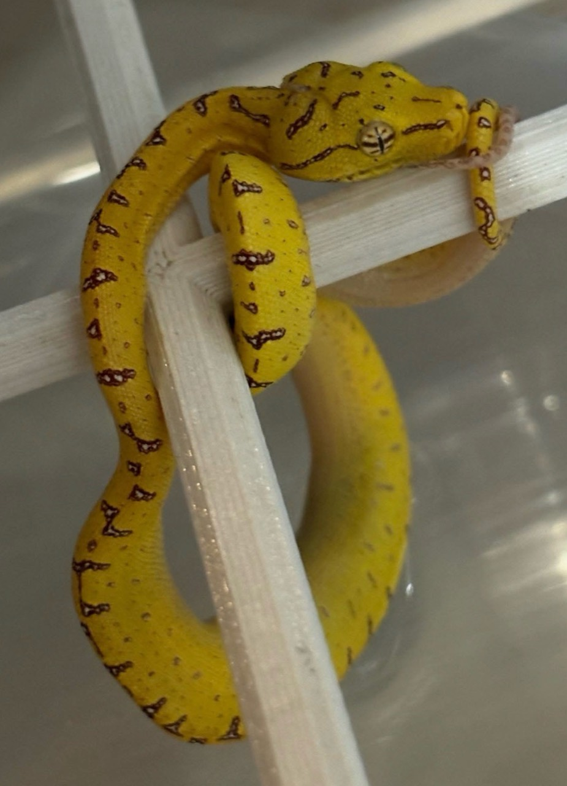
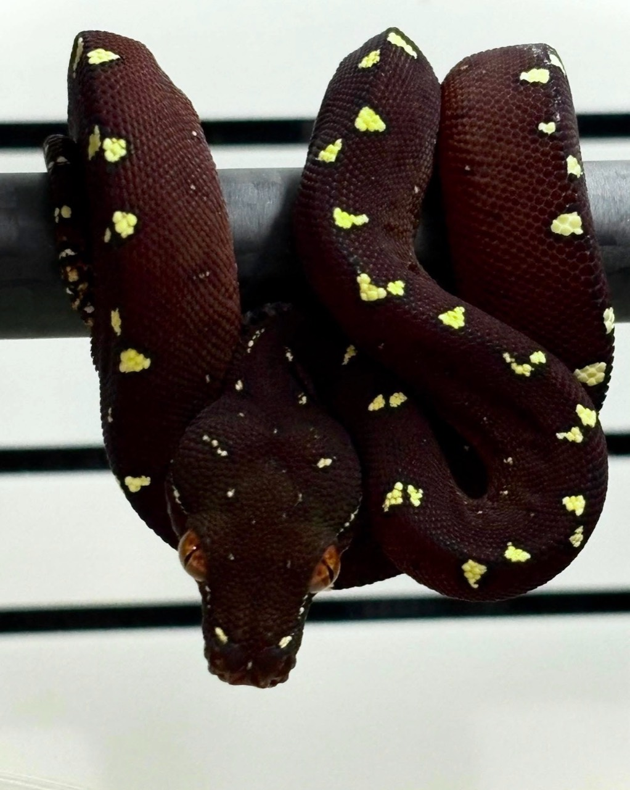

NAJWAŻNIEJSZY WNIOSEK
Żółć i czerwień neonatów nie są niedokończoną wersją dorosłej zieleni. To funkcjonalne barwy określonego etapu życia. Gdy wraz ze wzrostem zmieniają się sposób polowania, mikrohabitat i presja drapieżników, zmienia się również wygląd węża.
Ontogenetyczna zmiana barwy jest elementem rozwoju zwierzęcia — nie morphem, chorobą ani parametrem, który hodowca powinien „przyspieszać”.
Badania terenowe i eksperymenty z modelowaniem widzenia ptaków wskazują, że młodzieńcza barwa oraz zieleń osobnika po zmianie zapewniają kamuflaż w różnych środowiskach używanych na kolejnych etapach życia. To jeden z najlepiej udokumentowanych przykładów adaptacyjnego znaczenia zmiany barwy wraz z wiekiem u węży.
Żółty fenotyp młodociany występuje w całym kompleksie; czerwony tylko w części populacji północnych.
W badanej populacji australijskiej następowała szybko, przy określonym rozmiarze, bez związku z wylinką.
Wiek i tempo podawane przez hodowców są obserwacjami linii oraz osobników, a nie uniwersalnym zegarem.
OCC • ONTOGENETIC COLOUR CHANGE
Co właściwie znaczy „zmienia kolor”?
Ontogeneza to rozwój organizmu od najwcześniejszych etapów życia. Ontogenetyczna zmiana barwy — w literaturze skracana do OCC — jest trwałą, rozwojową przebudową wyglądu. U pytonów zielonych prowadzi od żółtego albo czerwonego/maronowego fenotypu młodocianego do dorosłej barwy zdominowanej zwykle przez zieleń.
Zachodzi wraz z dojrzewaniem organizmu i może trwać od szybkiej fazy głównej po późniejsze subtelne korekty.
Żółty lub czerwony neonat nie jest osobną odmianą barwną w rozumieniu genetyki hodowlanej.
To nie szybkie rozjaśnienie lub ściemnienie pod wpływem stresu, temperatury czy oświetlenia.
Dobrze zbadano ekologiczny sens OCC i jego związek ze zmianą trybu życia. Znacznie słabiej poznany jest szczegółowy mechanizm komórkowy i genetyczny, który steruje przebudową pigmentacji w tym konkretnym kompleksie. Nie przypisujemy więc procesu jednemu „genowi zieleni” ani prostemu przełącznikowi hormonalnemu bez bezpośredniego dowodu.


POLIMORFIZM MŁODOCIANY
Żółty nie wszędzie znaczy to samo. Czerwony nie występuje wszędzie.
Analiza Daniela Natuscha i Jessiki Lyons objęła 1090 pytonów zielonych z północnej Australii i Nowej Gwinei. Żółte młode stwierdzono we wszystkich badanych populacjach M. viridis i M. azurea. Czerwone występowały wyłącznie w części populacji M. azurea i z bardzo różną częstością.
Badacze nie wykazali między czerwonymi i żółtymi młodymi różnic w przeżywalności, proporcji płci, budowie ciała ani diecie. To ważne ograniczenie: efektowny kolor młodego nie jest potwierdzonym wskaźnikiem płci, „siły”, zdrowia ani przyszłego tempa wzrostu.
Prace z lat 2006–2007 używały szerokiej nazwy Morelia viridis dla całego kompleksu. Współczesna systematyka rozdziela południowe M. viridis i północne M. azurea. Dlatego zdanie ze starszej pracy, że „neonaty są czerwone lub żółte”, nie oznacza, że oba kolory występują w każdej obecnie wyróżnianej populacji.
Barwa neonata sama w sobie nie potwierdza lokalności. Może być zgodna z określonym pochodzeniem, ale dopiero rodowód, udokumentowani założyciele i historia kolejnych kojarzeń tworzą dowód linii. Pełne omówienie znajdziesz w publikacji o lokalizacjach i aktualnej taksonomii pytonów zielonych.
BADANIA TERENOWE • IRON RANGE
Kiedy żółty pyton staje się zielony?
Najdokładniejsze wartości pochodzą z badanej populacji na półwyspie Cape York w Australii. Wilson, Heinsohn i Wood opisali zmianę żółtego fenotypu w zielony między około 53 a 59 cm długości. Na podstawie modelu wzrostu oszacowali ten moment na około pierwszy rok życia. Zmiana następowała szybko i bez powiązanej wylinki.
STUDIUM PRZYPADKU • IRON RANGE, AUSTRALIA • NIE JEST UNIWERSALNYM HARMONOGRAMEM
Nie przenosimy tych centymetrów ani wieku jako normy na Biak, Sorong, Manokwari, inne populacje Nowej Gwinei czy linie designerskie. Inna historia ewolucyjna, genetyka i tempo rozwoju mogą dawać inny przebieg.
Dlaczego właśnie wtedy?
Eksperyment Wilsona, Heinsohna i Endlera oceniał ubarwienie z perspektywy wzrokowo polujących ptaków. Wynik wspiera adaptacyjne wyjaśnienie: czerwony lub żółty młodociany oraz zielony dorosły są lepiej ukryte w różnych siedliskach wykorzystywanych na kolejnych etapach życia. Zmiana współgra z przejściem w rozmiarze, sposobie żerowania i podatności na drapieżnictwo.
„Młode są żółte, bo siedzą na żółtych liściach”
Kamuflaż nie polega na dopasowaniu do jednego przedmiotu. Liczą się widmo światła, tło, kontrast, wysokość roślinności, pora aktywności i sposób widzenia drapieżnika. Badanie wskazuje na dopasowanie barwy do odmiennych siedlisk, a nie do pojedynczego „żółtego liścia”.
PRZEBIEG • NIE PRZEPIS
Jak wygląda sama zmiana?
U żółtych młodych hodowcy zwykle obserwują pojawianie się pojedynczych zielonych łusek i stopniowe rozszerzanie zielonych pól. Granice wzoru tracą dawny kontrast, a żółte partie mogą stać się przygaszone, oliwkowe lub limonkowe. U czerwonych i maronowych młodych przejście bywa bardziej złożone: zwierzę może jaśnieć, ciemnieć albo przechodzić przez oliwkowe i niemal czarne etapy pośrednie.
- Pierwsze pojedyncze łuski
Zmiana często zaczyna się punktowo. Jedna fotografia może pokazać tylko niewielki zielony „przeciek”.
- Mozaika przejściowa
Barwa młodociana i dorosła współistnieją. To najbardziej spektakularny, lecz zwykle krótki fragment procesu.
- Dominacja zieleni
Główne pola ciała przyjmują dorosły odcień, a elementy dawnego wzoru mogą zmienić się w niebieskie, białe, żółte albo zielone akcenty.
- Późne korekty
Po głównej zmianie barwa i kontrast mogą nadal subtelnie ewoluować przez kolejne lata.
Michèl Kroneis opisuje w swojej kolekcji wyjątkowo wczesny początek około 6. tygodnia, częstszy początek w wieku 9–15 miesięcy oraz główną fazę kończącą się zwykle do 2–4 lat. U zwierząt typu Biak proces bywa późniejszy i dłuższy. To wartości z wieloletniej praktyki hodowlanej — użyteczne orientacyjnie, ale nie uniwersalne dla każdego osobnika.
DOKUMENTUJ • NIE STERUJ
Jak obserwować OCC w hodowli
Zmiana koloru nie jest celem husbandry. Celem pozostają stabilne warunki, nawodnienie, prawidłowe karmienie, bezpieczeństwo żerdzi i niski poziom stresu. Nie ma wiarygodnych danych, że dodatkowe ciepło, częstsze karmienie, zraszanie, suplement czy UVB powinny być używane do przyspieszania OCC.
Stałe światło
Fotografuj w tym samym miejscu, bez filtrów i najlepiej po wylince. Automatyczny balans bieli telefonu potrafi zmienić żółć w pomarańcz, a zieleń w turkus.
Stały kadr
Raz w miesiącu wykonaj zdjęcie grzbietu, boku i głowy. Codzienne porównywanie zwykle nie pokazuje trendu.
Dane rozwojowe
Zapisuj datę, masę, długość mierzoną bez prostowania na siłę, karmienia, wylinki oraz datę pierwszych zielonych łusek.
Rodowód
Notuj lokalność lub linię wyłącznie na podstawie dokumentacji. Kolor młodego nie zastępuje danych rodziców.
Zdrowie osobno
Nagłe ściemnienie połączone z apatią, nieprawidłowym oddechem, leżeniem na dnie lub utratą kondycji nie powinno być zbywane jako OCC.
Cierpliwość
Późniejsza zmiana nie jest sama w sobie wadą. Porównuj osobnika przede wszystkim z jego własnym trendem.
Zmiana rozwojowa postępuje jako przebudowa wzoru i barwy. Jeśli zmianie wyglądu towarzyszą objawy ogólne, uszkodzenia skóry, pęcherze, nieprawidłowe wylinki lub zaburzenia zachowania, potrzebna jest ocena warunków i lekarza weterynarii zajmującego się gadami.
CO MÓWI NEONAT?
Granica między obserwacją a wróżeniem
| Cecha młodego | Co można powiedzieć | Czego nie wolno obiecywać |
|---|---|---|
| żółta barwa podstawowa | Jest zgodna ze wszystkimi badanymi populacjami kompleksu. | Nie potwierdza M. viridis, Aru ani żadnej konkretnej lokalności. |
| czerwona / maronowa barwa | Jest zgodna z częścią populacji M. azurea. | Nie identyfikuje automatycznie Biak, Sorong, Cyclops ani Manokwari. |
| dużo żółtych lub białych plamek | Pozwala opisać aktualny fenotyp i dokumentować jego rozwój. | Nie gwarantuje „high yellow”, niebieskiego grzbietu ani ilości bieli u dorosłego. |
| wczesne zielone łuski | Pokazują, że OCC już się rozpoczęła. | Nie mówią, kiedy proces się zakończy ani jaki będzie ostateczny odcień. |
| późna zmiana | Może być cechą osobniczą lub częścią tendencji konkretnej linii. | Sama nie dowodzi pochodzenia Biak i nie jest rozpoznaniem zaburzenia. |
Ostateczny fenotyp powstaje z połączenia dziedziczności, rozwoju i historii konkretnej linii. Fotografia neonata jest początkiem dokumentacji, a nie projekcją dorosłego węża.
FAKT CZY OPOWIEŚĆ?
Najczęstsze mity o zmianie koloru
„Czerwony będzie bardziej niebieski”
Brak potwierdzonej reguły. Kolor neonata nie pozwala pewnie przewidzieć nasycenia zieleni, ilości błękitu, bieli ani żółci dorosłego.
„Żółty neonat to na pewno Aru”
Żółte młode występują we wszystkich badanych populacjach. Lokalność potwierdza rodowód, nie kolor.
„Zmiana przychodzi z konkretną wylinką”
W badaniu australijskim szybka zmiana nie była związana z wylinką. Nowy naskórek może jedynie zwiększyć widoczny kontrast.
„Więcej jedzenia szybciej zazieleni”
Nie ma podstaw, by przekarmiać zwierzę w celu wywołania OCC. Tempo wzrostu nie powinno być sztucznie podkręcane.
„Późna zmiana oznacza problem”
Rozrzut osobniczy i populacyjny jest duży. Niepokoją objawy zdrowotne, a nie sam brak zieleni w określonym miesiącu.
„Po zazielenieniu wygląd jest gotowy”
Główna faza może się zakończyć, lecz nasycenie, niebieskie elementy, biel i żółć mogą subtelnie ewoluować później.
SZYBKIE ODPOWIEDZI
FAQ hodowcy
Czy wszystkie pytony zielone rodzą się żółte?
Nie. Żółty fenotyp występuje we wszystkich badanych populacjach, ale w części północnych populacji Morelia azurea rodzą się również młode czerwone lub maronowe.
Czy czerwone młode są rzadsze?
W skali całego kompleksu tak, ponieważ nie występują wszędzie. Ich częstość silnie różni się jednak między populacjami, więc jedno globalne „procentowo” byłoby mylące.
W jakim wieku mój wąż powinien zacząć się zmieniać?
Nie istnieje bezpieczny termin dla każdego pochodzenia. W Iron Range oszacowano około pierwszego roku, a doświadczeni hodowcy opisują bardzo szeroki rozrzut — od wyjątkowo wczesnych przypadków po późną i długą zmianę, szczególnie w niektórych liniach Biak.
Czy OCC odbywa się podczas wylinki?
Nie musi. W badaniu terenowym główna zmiana zachodziła szybko i bez związku z konkretną wylinką. Po zrzuceniu starego naskórka kolor może wyglądać wyraźniej.
Czy ze zdjęcia młodego można przewidzieć dorosłą barwę?
Można opisać aktualny fenotyp i porównać go z krewnymi tej samej udokumentowanej linii. Nie można wiarygodnie zagwarantować końcowej ilości żółci, błękitu, bieli ani dokładnego odcienia zieleni.
Czy kolor młodego potwierdza lokalność?
Nie. Barwa może wykluczyć niektóre hipotezy w świetle danych populacyjnych, lecz nie zastępuje rodowodu i historii założycieli.
Czy trzeba zmieniać warunki, kiedy pojawiają się zielone łuski?
Nie z powodu samej OCC. Warunki prowadzi się według biologii, wieku, kondycji i reakcji zwierzęcia, a nie dla uzyskania określonego koloru.
W JEDNYM ZDANIU
Nie obserwujemy przemalowania — obserwujemy zmianę niszy zapisaną w rozwoju.
Żółty i czerwony neonat są pełnoprawnymi etapami biologii pytona zielonego. Najlepsza praktyka hodowlana polega na stabilnym utrzymaniu, cierpliwej dokumentacji oraz oddzieleniu tego, co naprawdę widzimy, od tego, co dopiero chcielibyśmy zobaczyć u dorosłego.
POZNAJ GATUNEK →BIBLIOGRAFIA I WERYFIKACJA
Źródła użyte do opracowania
Wnioski naukowe oparto na publikacjach recenzowanych. Terminy i przebieg spotykany w hodowli przedstawiono osobno jako doświadczenie praktyków, bez nadawania im rangi uniwersalnego prawa.
Badania recenzowane
- Wilson D., Heinsohn R., Endler J.A. (2007). The adaptive significance of ontogenetic colour change in a tropical python. Biology Letters 3:40–43. DOI 10.1098/rsbl.2006.0574.
- Wilson D., Heinsohn R., Wood J. (2006). Life-history traits and ontogenetic colour change in an arboreal tropical python, Morelia viridis. Journal of Zoology 270:399–407. DOI 10.1111/j.1469-7998.2006.00190.x.
- Natusch D.J.D., Lyons J.A. (2020). Geographic frequency and ecological correlates of juvenile colour polymorphism in green pythons (Morelia azurea and Morelia viridis). Australian Journal of Zoology 68:62–67. DOI 10.1071/ZO21002.
- Natusch D.J.D. i in. (2020). Species delimitation and systematics of the green pythons (Morelia viridis complex) of Melanesia and Australia. Molecular Phylogenetics and Evolution 142:106640. DOI 10.1016/j.ympev.2019.106640.
Praktyka hodowlana i literatura specjalistyczna
- Kroneis M. Ontogenetische Umfärbung bei Morelia viridis sowie Morelia azurea. Festland-Baumpythons. Opis wieloletnich obserwacji hodowlanych.
- Maxwell G. (2013). The More Complete Chondro, 2nd ed. ECO Herpetological Publishing.
- Kivit R., Wiseman S. (2005). The Green Tree Python & Emerald Tree Boa. Kirschner & Seufer Verlag.
- The Reptile Database. Aktualna karta Morelia viridis i powiązana karta M. azurea; kontrola nomenklatury 19.08.2026. Reptile Database.
Wartości 53–59 cm i około jednego roku odnoszą się do populacji Iron Range badanej w naturze. Zakresy 9–15 miesięcy i 2–4 lata są praktycznym podsumowaniem doświadczeń hodowlanych Michèla Kroneisa. Nie zostały połączone w jedną „normę”, ponieważ dotyczą innych populacji, warunków i poziomów dowodu.